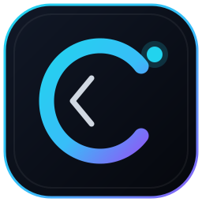

Escritorio Corte
Panel inferior, menú de aplicaciones, reloj, calendario, papelera, notificaciones y tema oscuro con identidad propia.

Corte OSLinux real, ligero y sin dependencia de Internet. Escritorio propio, aplicaciones nativas e instalador gráfico. Corte Arcade llegará más adelante. Diseñado para VirtualBox y equipos con recursos limitados.
Corte OS es mi primer sistema operativo y todavía le faltan cosas. La base arranca, se instala y las apps abren, pero no esperes un Windows ni un Ubuntu pulido: puede que alguna pantalla se vea rara, que el instalador haga algo que no te guste o que una app se cierre sin avisar. Si te pasa, no es tu culpa: es un bug.
Lo probé en VirtualBox, con arranque BIOS, instalación automática y arranque del sistema instalado. No lo probé en todo el hardware del mundo, así que usalo en una máquina virtual y no en tu computadora principal. Todavía no guardes nada importante ahí.
Si encontrás un fallo, abrí un issue en GitHub y contame qué pasó. Esta es la versión 0.1.0 y va a cambiar.
No es una simulación web. Corte OS arranca con kernel Linux, GRUB, XFCE personalizado y aplicaciones GTK reales.
Panel inferior, menú de aplicaciones, reloj, calendario, papelera, notificaciones y tema oscuro con identidad propia.
Corte Browser, Files, Terminal, Store, Settings, Notes, Calculator, Monitor, Media y Security. Todas funcionales y sin conexión.
Corte Installer detecta discos virtuales, permite instalación automática o manual, crea usuario y contraseña e instala GRUB BIOS/UEFI.
Pensado para 2 GB de RAM y 2 núcleos. XFCE, zram y aplicaciones Python/GTK para un arranque rápido.
Notas, calculadora, archivos, terminal, monitor, reproductor y ajustes funcionan en local. El navegador y la tienda usan la red cuando existe.
ISO híbrida para BIOS y UEFI, disco virtual de 20 GB, red NAT y resolución ajustable desde el sistema.
Las capturas se publicarán únicamente cuando la ISO haya arrancado y se haya probado en una máquina virtual limpia.
Corte OS está optimizado para máquinas virtuales y equipos modestos.
| Mínimo | Recomendado | |
|---|---|---|
| RAM | 1.5 GB | 2 GB o más |
| CPU | 2 núcleos | 2–4 núcleos |
| Disco virtual | 12 GB | 20 GB |
| Vídeo | VMSVGA 64 MB | VMSVGA 128 MB |
| Red | Opcional | NAT |
| Firmware | BIOS | BIOS o UEFI |
La ISO se publica tras compilarla y superar las pruebas automáticas de arranque e instalación.
Pendiente de compilación
El botón de descarga apunta al archivo real alojado en GitHub Releases. No hay enlaces ficticios ni descargas simuladas.
Guía resumida. El manual completo está en el repositorio y dentro de la ISO.
Debian 12, XFCE personalizado, Corte Installer, aplicaciones base, notificaciones y flujo de compilación con pruebas en QEMU.
Snake, Tetris, Buscaminas, Ajedrez, Sudoku, plataformas 2D, mini Minecraft 2D, supervivencia y carreras. Sistema de récords en SQLite.